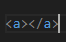
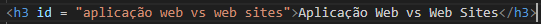

O foco principal deste artigo é discutir a cerca da linguagem de marcação html que é o pilar
central, ou melhor o esqueleto de qualquer
web site ou aplicação que você venha a contruir.
Mas para isso precisamos dá uma leve pencelada nos conceitos de aplicação web, web
site, servers, front-and, back-and e linguagem de progração.
Aplicação Web, é uma aplicação desenvolvida para funcionar necessariamente em um browser (navegaor) com a utilização da internet e
que permita aos usuários interagir com seu conteúdo, fazer requisições, receber conteúdo solicitado,e se permitido, fornecer informções
para cadastro ou solicitações de serviço. Para isso WebApp, como também são conhecidos, precisam de algumas ferramentas, como:
Ok, mas qual a diferença entre web site e WebApp?
Web sites são mais estáticos, e apresentam um grau de interação bem menor que em uma aplicação web. Você pode até navegar entre as-
abas, no entanto não é permitido a manipulação de seu conteúdo.
Muitas vezes é permitido apenas a leitrua de arquivos e nada mais. Esses sites são comumente usados para publicação de arquivos, notí-
cias, artigos etc.
Já as WebApp são mais complexos, desde seu dising até sua estrutura interna. Geralmente aplicações são feitas em equipes com sua pró-
pria metodologia, variando de empresa em empresa, contendo requisitos funcionais e não funcionais, regras de negocio e documentação.
Outro fator importante da aplicação é o banco de dados e a linguagem de programação, que permite ao cliente interagir com o site, fazer
modificações, compra, cadastro, login entre outros.
Ao final da aplicação quando o usuario fechar o navegador os dados dele não iram se perder, mas sim ficar armazenado no campo refe-
rente ao cliente.
Servs são computadores que guardam e fornecem informações atráves de Apis. As informações e dados são guardadas dentro de um-
banco de dados que é gerenciado através de um SGBD. Então o back-and faz solicitações ao SGBD que busca dentro do banco de dados
e devolve ao front-and que repassa ao client atráves de protocolos que são padrões de comunicação e transferência de dados.
Os protocolos mais conhecidos são
Para não alongarmos mais vou da apenas uma leve explicação conceitual a respeito do front e do back. No front são as aplicações que iram rodar no pc
do usuario já o front é tudo aquilo que ira rodar dentro do servidor.
Html (linguagem de Marcação de Hipertexo) é código que você usa para se comunicar com o navegador, informando como o conteúdo do site será es-
truturado. Reforçando que Html não é linguagem de programação, pois ela apenas ira pegar o texto para transformar em Hipertexo.
No entanto, tem umas caracteriscas comuns, em html podemos orgazinar os elementos (que é o proprio texto) em paragrafos, listas, imagens e tabelas.
Tag são as responsaveis por transformar texto em hipertexto, geralmente elas tem a seguinte sintaxe:
 onde temos a abertura da tag < > e o fechamento dela com < / >.
Com ela também temos o elementos que servem como agrupadores como no caso do "id" que ser como identificador de determinado elemento, exemplo:
